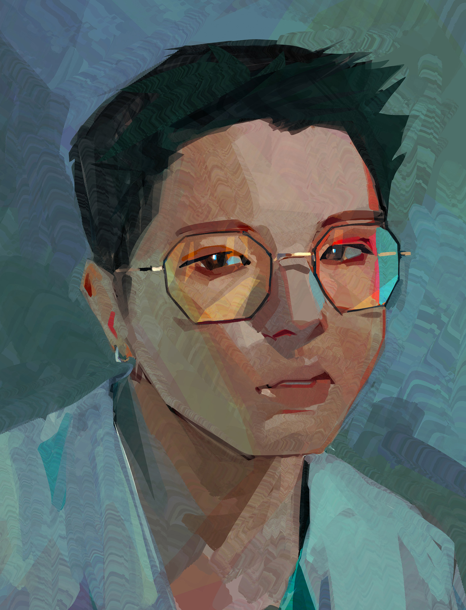

This one's me
Hey, I’m Static, but you might also know me as staticcolour or Tin Trinh. I’m a digital painter and illustrator from Vancouver, BC. I’m a big fan of characters, stories, and pretty things.
If you have a project or just want to chat, feel free to hit me up 👍
Email: staticcolour@gmail.com
Instagram: @staticcolour
Twitter: @staticcolour